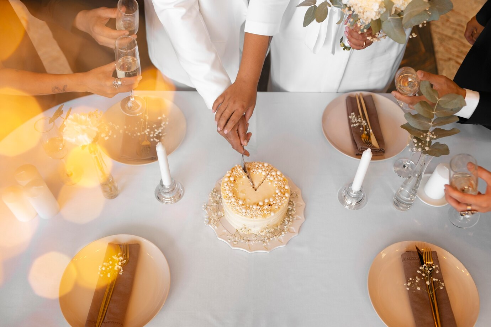

Como escolher o presente para o Dia das Mães? Confira!
Sem dúvidas podemos dizer que o Dia das Mães é uma das datas mais especiais do ano
Afinal, é
uma oportunidade para demonstrarmos toda a gratidão por quem
nos acompanha desde o início
das nossas vidas,com dedicação, afeto e compromisso.
Porém, é sempre bom lembrarmos que as mães contam com sonhos, vontades,
atitudes e, até
mesmo, estilos distintos e únicos.
Por isso, na hora de escolher
o melhor presente para o Dia das Mães, é interessante
demonstrar atenção a esses detalhes —
que podem te guiar até a escolha perfeita e mais
inesquecível.
Pensando ...
PRESENTE DE FORMATURA:8 IDEIASA celebração da formatura é um marco significativo na vida dos estudantes e sua família. |

|
MIX DE COLARES:APRENDA A COMBINARO mix de colares é uma tendência que ganhou destaque no mundo da moda |

|
PRESENTE PERSONALIZADO:PARA PRESENTEAR QUEM VOCÊ AMAO que dar de presente personalizado? O presente personalizado é uma expressão sincera |

|
CONHEÇA OS TIPOS DE ALIANÇA DE CASAMENTO:A aliança de casamento é mais do que uma simples joia. Ela carrega consigo |
|  |
BODAS DE OURO:ORIGEM,SIGNIFICADO E IDEIAS DE PRESENTECelebrar o aniversário de casamento é uma oportunidade de renovar os laços de amor |